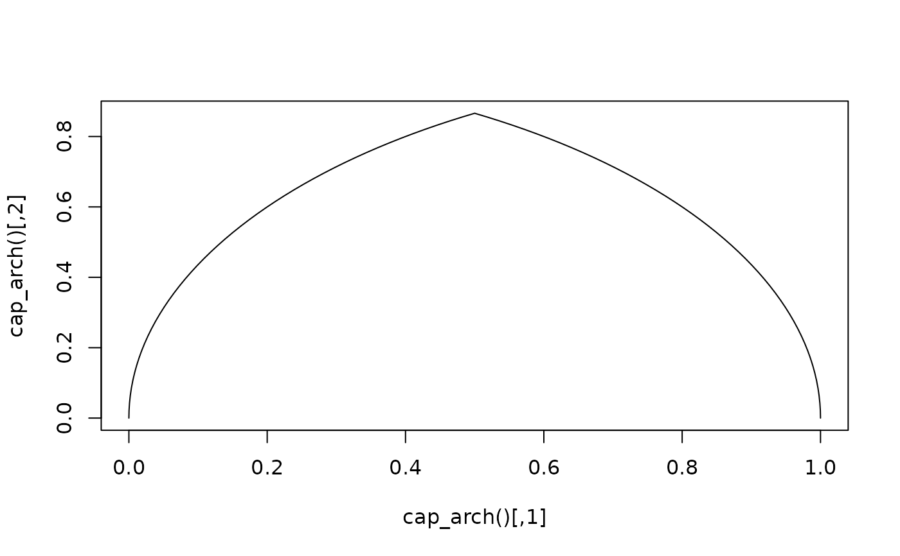

These functions construct various sorts of caps. They construct a matrix
that can be supplied as the shape argument in gizmo_barcap().
Details
When designing custom cap shapes, the expectation is that the first point
starts at the (0, 0) coordinate and the last point ends at the (0, 1)
coordinate. The first column follows the orthogonal direction of the bar
whereas the second column follows the direction of the bar.
Functions
cap_triangle(): An equilateral triangle withn = 3points.cap_round(): A semicircle.cap_arch(): Two circular arcs forming an equilateral Gothic arch.cap_ogee(): Four circular arcs forming an 'ogee' arch.cap_none(): No cap.
Examples
plot(cap_arch(), type = 'l')
